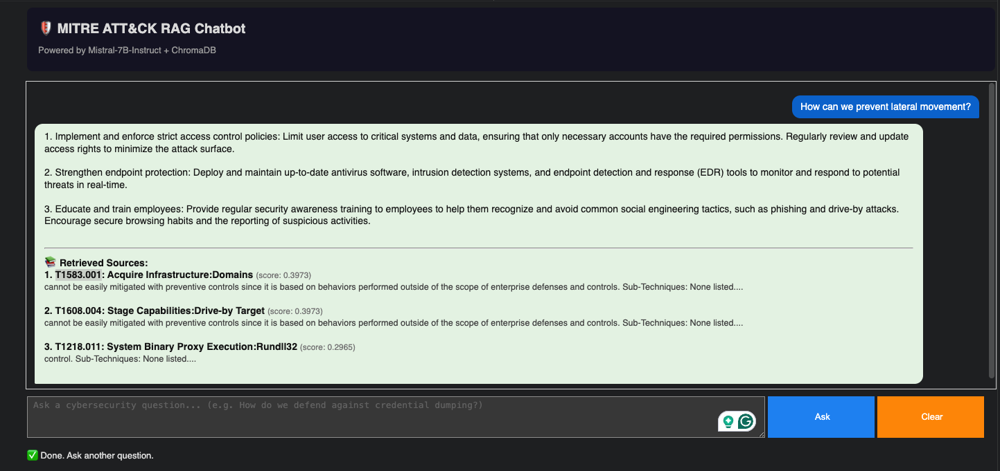

Project: Retrieval-Augmented Generation (RAG) for MITRE ATT&CK Cybersecurity Guidelines
- Author: Ashween Ramakrishnan (A1866320)
- Supervisor: Dr. Orvila Sarker, Adelaide University
- Core Tech: Python, Mistral-7B-Instruct (4-bit NF4), ChromaDB, LangChain, Sentence-Transformers (all-MiniLM-L6-v2), RAGAS Framework
- Project Type: Cybersecurity AI & Natural Language Processing Research
This project implements an end-to-end Retrieval-Augmented Generation (RAG) pipeline designed to deliver actionable, grounded cybersecurity incident response guidelines. By scraping the complete MITRE ATT&CK Enterprise Framework (697 techniques), the system indexes TTPs into ChromaDB and conditions a quantized Mistral-7B model to mitigate LLM hallucinations during threat analysis.
RAG Pipeline Architecture
- Data Ingestion & Extraction: Direct web scraping of
attack.mitre.orgextracting 697 enterprise techniques, sub-techniques, detection methods, and mitigation mappings. - Indexing & Vector Storage: Segmented text into sliding word windows (400 words, 50-word overlap) and generated 384-dimensional dense vectors via
all-MiniLM-L6-v2stored in ChromaDB. - Dense Semantic Retrieval: Query encoder performs cosine similarity Approximate Nearest Neighbor (ANN) search to retrieve top-k (k=3) relevant context chunks.
- Quantized Generation & UI: 4-bit NF4 quantized Mistral-7B-Instruct produces structured 3-point recommendations traceable back to explicit MITRE Technique IDs.
Retrieval & Grounding Metrics
- Faithfulness Score (Proxy): 0.816 (High context grounding)
- BERTScore F1: 0.790 (Strong lexical alignment)
- Hallucination Rate: 0.184 (Only 18.4% unsupported claims)
- Answer Relevancy (RAGAS): 0.674
System Configuration & Constraints
- Embedding Model: all-MiniLM-L6-v2 (384-dim)
- LLM Generator: Mistral-7B-Instruct-v0.3 (4-bit NF4)
- Vector Store: ChromaDB (Cosine similarity)
- Chunk Window: 400 words / 50 overlap
Evaluation Metric Breakdown
| Metric | Score / Rate | Meaning & Findings |
|---|---|---|
| Faithfulness (Proxy) | 0.816 | High percentage of generated assertions are explicitly supported by retrieved MITRE chunks rather than parametric memory. |
| BERTScore F1 | 0.790 | Uniformly high token-level similarity across queries, proving high usage of domain vocabulary. |
| Answer Relevancy | 0.674 | Moderate semantic relevance; indicates the model occasionally provides general advice alongside specific query context. |
| Context Precision | 0.562 | Measures retrieval usefulness; highlighted that fixed chunking can miss specific technical sub-technique details. |
| Hallucination Rate | 0.184 | Only 18.4% of generated sentences lacked direct context backing, exhibiting binary commitment behavior. |
RAG Interactive Chatbot Demo
The system features an interactive query interface built with ipywidgets, providing real-time cybersecurity guidance backed by source attribution:

Figure 1: Interactive MITRE ATT&CK RAG Chatbot interface demonstrating query execution, structured recommendations, and retrieved source attribution with similarity scores.
Key Research Insights
- The Lexical Paradox: The evaluation proved that high lexical overlap (BERTScore ~0.79) does not automatically guarantee semantic grounding (Faithfulness), underscoring the critical need for multi-metric frameworks like RAGAS.
- Zero-Retraining Updates: Demonstrates the primary enterprise advantage of RAG: security knowledge bases can be updated in real time via scraping without costly LLM retraining.
- Consumer Hardware Deployment: Utilizing 4-bit NF4 quantization enabled full execution on standard GPU infrastructure (Google Colab T4/A100) with low latency.